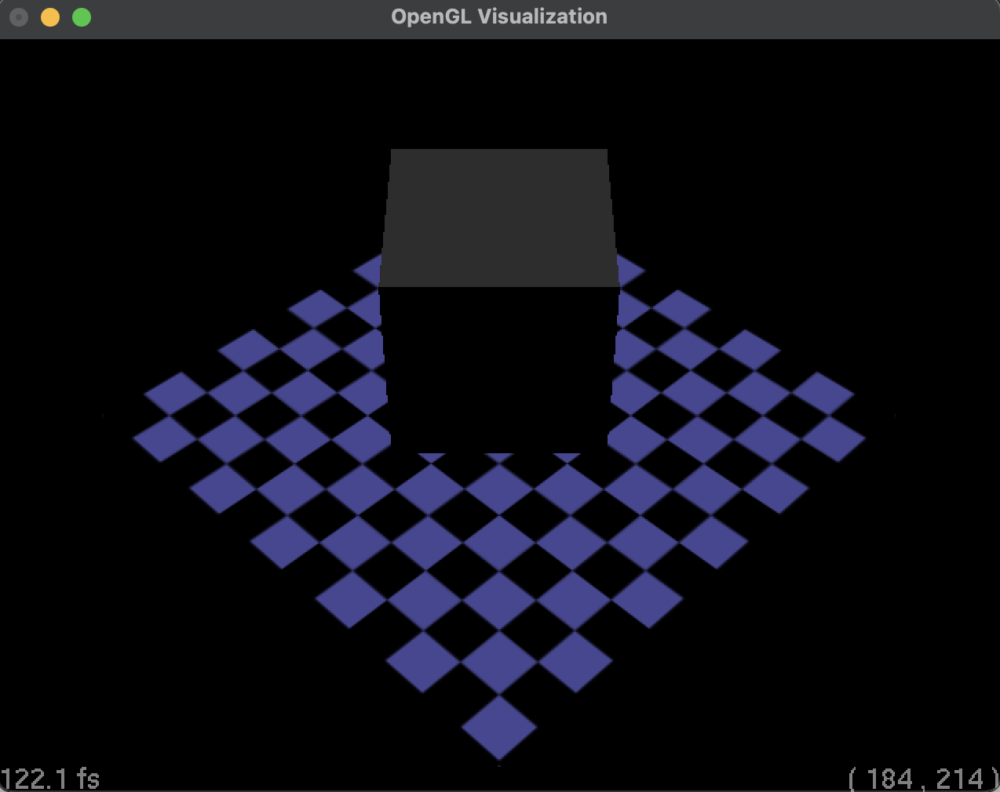
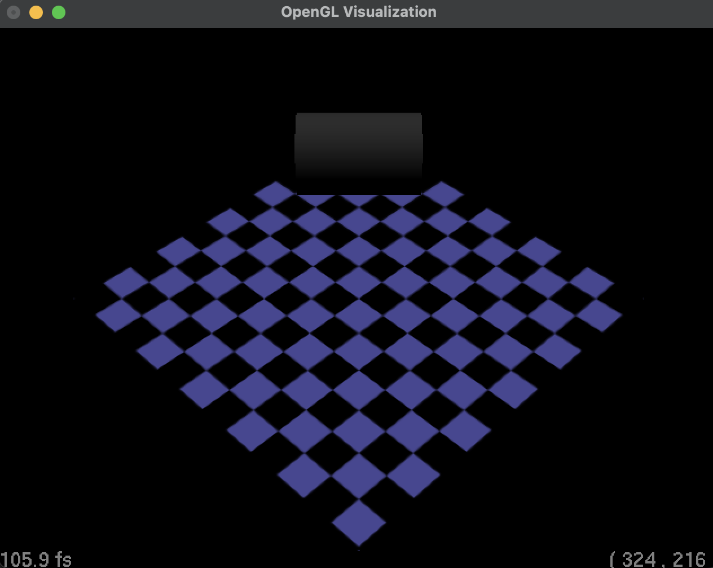

glVertices to store all the vertices of the sphere. I also added a method drawVertex to draw a single vertex through openGL.Ray::Camera::drawOpenGL:
This method calls the OpenGL commands for setting up the camera.
Ray::ShapeList::drawOpenGL:
This method calls the necessary OpenGL commands to render the primitive.
Ray::TriangleList::drawOpenGL & Ray::Triangle::drawOpenGL:
Loop through the triangles and call the drawOpenGL method of each triangle. For each triangle, we just draw each vertex in counter clockwise order.
Ray::Sphere::drawOpenGL:
To draw a shere we need to tessellate the sphere into triangles and quads and draw them using the OpenGL commands.
Ray::Material::drawOpenGL:
This method calls the necessary OpenGL commands to set up the material including the emissive, ambient, diffuse, specular, and shininess. We also set up the texture if the material has a texture, make the material transparent if the material has transparency. Implementation inspired by: graphicsbook
Ray::DirectionalLight::drawOpenGL & Ray::PointLight::drawOpenGL & Ray::SpotLight::drawOpenGL:
This method calls the necessary OpenGL commands to set up the light source. I used glLightfv to set up position, diffuse, specular, and ambient light. I also used glLightf to set up attenuation, spot cutoff, and spot exponent.
Ray::AffineShape::drawOpenGL:
This method takes into account the local transfomation by pushing the appropriate matrix onto the stack prior to rendering and then popping it off after the use.
Triangle Texture Mapping:
Ray::Material::drawOpenGL():
This method is updated so that when a texture is present GL_TEXTURE_2D will be enabled.
Ray::Texture::initOpenGL():
In this method we generate the texture and bind the texture to the handler. I also used MIPmap to make the texture more
smooth and reduce the aliasing effect.
Directional Light |
Point Light |
Spot Light |
Ray::Box::drawOpenGL:
This method calls the necessary OpenGL commands to render the box. A box can be represented by 6 quads, so I used glBegin(GL_QUADS) to draw the box. The visualization of the test_box.ray that I prepared (tessellation complexity = 100 ) is shown below, you can run the following command to generate the image: ./Assignment3 --in xzhan227_HTML/rays/test.box.ray --width 640 --height 480 --cplx 100
|  |
Directional Light |
Ray::Cylinder::drawOpenGL:
This method calls the necessary OpenGL commands to render the cylinder. A cylinder can be divided into 3 pieces: top and bottom faces and the side face. I chose to render the top and bottom faces by triangles, which top vertex located at the top/bottom face center. The side face is then rendered by quads. The visualization of the test_cylinder.ray that I prepared (tessellation complexity = 100 ) is shown below, you can run the following command to generate the image: ./Assignment3 --in xzhan227_HTML/rays/test.cylinder.ray --width 640 --height 480 --cplx 100
|  |
Directional Light |
Ray::Cone::drawOpenGL:
This method calls the necessary OpenGL commands to render the cone. A cone can be rendered by triangles, which top
vertex located at the top of the cone. Noted, the normal of each triangle is different and were defined in the initOpenGL function. The visualization of the
test_cone.ray that I prepared (tessellation complexity = 100 ) is shown below, you can run the following
command to generate the image:
./Assignment3 --in xzhan227_HTML/rays/test.cone.ray --width 640 --height 480 --cplx 100
Directional Light |
Ray::Torus::drawOpenGL:
This method calls the necessary OpenGL commands to render the torus. The torus geometry is generated by spanning a circle along a circular path. Geometry Illustration. The visualization of the test_torus.ray that I prepared (tessellation complexity = 100 ) is shown below, you can run the following
command to generate the image:
./Assignment3 --in xzhan227_HTML/rays/test.torus.ray --width 640 --height 480 --cplx 100
Directional Light |
Moving the camera:
Ray::Camera::moveForward, moveRight, moveUp: Ray::Camera::rotateUp, rotateRight:
This method rotates the camera by the given amount in the given direction. Then the gluLookAt is called to update the ModelView matrix stack. To achieve this, I used the Rodrigues' rotation formula.
Torus |
Cone |
Cyliner |
Box |
Room Rendering:
I created a Ray file containing the following elements
PS: To render the transparent table, please uncomment the transparent rendering part in Material::drawOpenGL in scene.to.do.cpp.
Art Conetest: